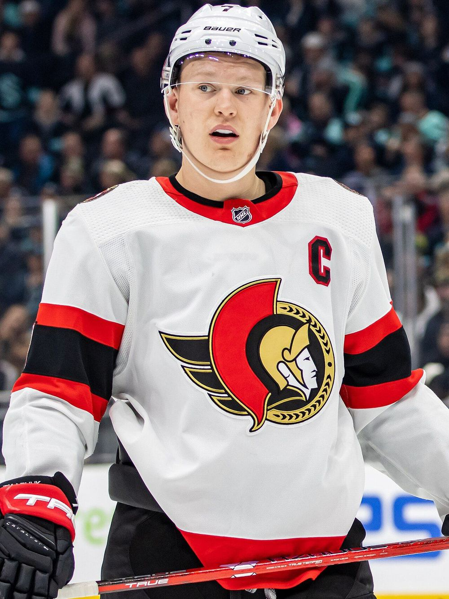

Tkachuk भाइयों ने NHL इतिहास बनाया, Panthers ने Columbus को 7-3 से हराया
Brady Tkachuk ने दूसरे पीरियड में सिर्फ आठ मिनट से कुछ अधिक समय में नैचुरल हैट ट्रिक की। उनके भाई Matthew ने तीनों गोलों में असिस्ट किया, Florida ने 7-3 से जीत दर्ज की।

मुख्य बिंदु
- Florida Panthers ने मंगलवार रात Columbus Blue Jackets को 7-3 से हराया। लेकिन कहानी स्कोर की नहीं थी। कहानी दो भाइयों की थी।
- Brady Tkachuk ने दूसरे पीरियड में 8 मिनट 3 सेकंड के भीतर लगातार तीन गोल किए, एक नैचुरल हैट ट्रिक। उनके भाई Matthew ने तीनों गोलों में असिस्ट किया। NHL के अनुसार, अपने भाई की नैचुरल हैट ट्रिक के…
- Brady ने तीन गोल और एक असिस्ट किया। Matthew ने पांच असिस्ट किए। Reuters के अनुसार, दोनों के ये आंकड़े उनके करियर की सर्वश्रेष्ठ बराबरी है।
Florida Panthers ने मंगलवार रात Columbus Blue Jackets को 7-3 से हराया। लेकिन कहानी स्कोर की नहीं थी। कहानी दो भाइयों की थी।
Brady Tkachuk ने दूसरे पीरियड में 8 मिनट 3 सेकंड के भीतर लगातार तीन गोल किए, एक नैचुरल हैट ट्रिक। उनके भाई Matthew ने तीनों गोलों में असिस्ट किया। NHL के अनुसार, अपने भाई की नैचुरल हैट ट्रिक के तीनों गोलों में असिस्ट करने वाला खिलाड़ी इससे पहले कोई नहीं था।
Brady ने तीन गोल और एक असिस्ट किया। Matthew ने पांच असिस्ट किए। Reuters के अनुसार, दोनों के ये आंकड़े उनके करियर की सर्वश्रेष्ठ बराबरी है।
आठ मिनट जिन्होंने मैच पलट दिया
पहला गोल Columbus ने किया। पहले पीरियड के 14:11 पर Florida की गलती के बाद Kent Johnson ने दौड़कर गोल किया। पहले अंतराल तक Blue Jackets 1-0 से आगे था।
दूसरे पीरियड की शुरुआत में ही बढ़त खत्म हो गई। 2:27 पर Matthew Tkachuk ने बीच से पास दिया और Brady ने Panther के रूप में अपना पहला गोल किया। चार मिनट से भी कम समय बाद, पावर प्ले पर, Matthew ने फिर उन्हें ढूंढा। पीरियड के 10:30 पर Brady ने एक और पावर प्ले पर हैट ट्रिक पूरी की, Sam Reinhart के शॉट के बाद बोर्ड से लौटी पक को गोल में बदलकर।
Matthew रुके नहीं। दूसरे पीरियड के अंत में उन्होंने Carter Verhaeghe को गोल कराया, उस पीरियड में उनका चौथा असिस्ट, Associated Press के अनुसार Panthers के इतिहास में पहली बार ऐसा हुआ। उनके पांचवें असिस्ट ने एक मैच में असिस्ट के क्लब रिकॉर्ड की बराबरी की।
Seth Jones ने Florida के लिए चार असिस्ट किए। Verhaeghe और Reinhart ने दो दो गोल किए, Reinhart ने एक असिस्ट भी जोड़ा। Florida पावर प्ले पर 6 में से 4 बार सफल रहा। शुरुआती गोलकीपर Jacob Markstrom की तबीयत ठीक न होने के कारण Akira Schmid ने 24 बचाव किए।
Columbus ने खुद को दोष दिया
Columbus के लिए Johnson, Denton Mateychuk और Cole Sillinger ने गोल किए। Cam Talbot ने 23 में से 17 शॉट रोके, तीसरे पीरियड की शुरुआत में Jet Greaves ने उनकी जगह ली। Columbus इस सीजन में विरोधी पावर प्ले के 18 मौकों पर सात गोल खा चुका है।
Columbus के कोच Rick Bowness ने हार का दोष अपनी ही टीम पर डाला, Columbus Dispatch के अनुसार उन्होंने कहा कि टीम ने खुद को हराया, जैसे St. Louis में हुआ था।
Columbus के Mathieu Olivier को दूसरे पीरियड में Uvis Balinskis पर स्टिक चलाने के लिए पांच मिनट की बड़ी सजा और मैच से बाहर होने की सजा भी मिली।
मंगलवार के बाकी मैच
**Rangers 4, Lightning 1।** Alexis Lafreniere ने पहले 12:47 में दो गोल किए, इस सीजन में उनके छठे और सातवें गोल, और लगातार चौथे मैच में गोल किया। New York घर पर 5-0-0 हो गया, 1990-91 सीजन के बाद Madison Square Garden में उसकी सबसे अच्छी घरेलू शुरुआत। Igor Shesterkin शरीर के निचले हिस्से की चोट के कारण पूरे सीजन से बाहर हैं, इसलिए Dylan Garand ने 25 बचाव किए।
**Blues 7, Senators 2।** St. Louis के Pius Suter और Mason McTavish ने दो दो गोल और एक एक असिस्ट किया। Jake Neighbours ने भी दो गोल किए, और डिफेंसमैन Adam Jiricek ने करियर का पहला गोल किया। Ottawa के Claude Giroux ने गोल करके 1,170 अंकों के साथ लीग की सर्वकालिक अंक सूची में Bobby Hull के साथ 59वें स्थान की बराबरी की।
**Hurricanes 4, Capitals 2।** Andrei Svechnikov ने दो गोल और एक असिस्ट किया, Carolina ने लगातार छठी जीत हासिल की। यह रात Alex Ovechkin का Raleigh का अंतिम नियमित सीजन दौरा भी था। उन्होंने पिछले हफ्ते घोषणा की थी कि यह सीजन उनका आखिरी होगा।
**Devils 5, Red Wings 4, ओवरटाइम में।** New Jersey के Jack Hughes ने ओवरटाइम में विजयी गोल किया। Detroit के Alex DeBrincat ने हार के बावजूद तीन अंक जोड़े।
**अन्य परिणाम:** Islanders 3, Canucks 2। Canadiens 4, Sabres 3। Blackhawks 5, Penguins 3। Kraken 3, Flyers 2।
स्रोत
- Reuters: Tkachuk brothers make NHL history as Panthers top Blue Jackets
- AP via Sportsnet: Tkachuk brothers lead Panthers in drubbing of Blue Jackets
- Columbus Dispatch: Blue Jackets collapse again in 7-3 loss to Florida Panthers
- Reuters: Lafreniere scores twice, Rangers beat Lightning to stay unbeaten at home
- Reuters: Suter, McTavish help Blues wallop Senators 7-2
- Reuters: Svechnikov, Hurricanes pull past Capitals